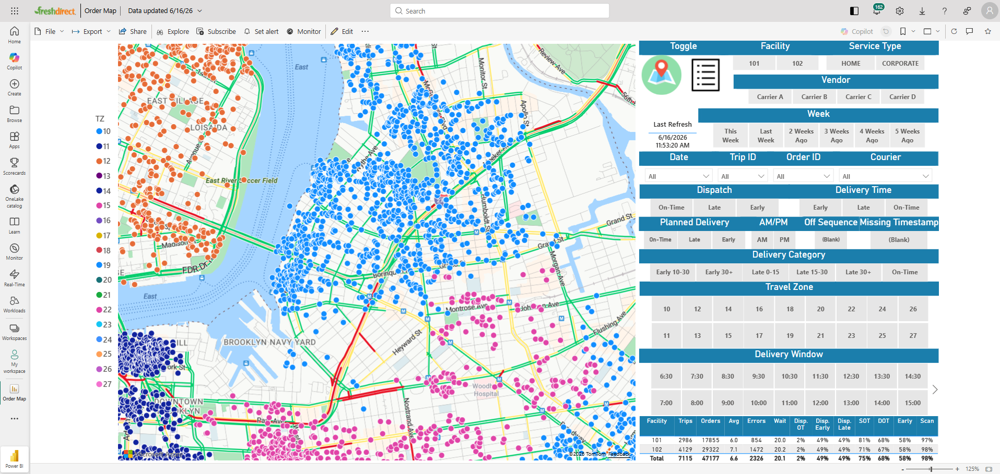

Demo · Synthetic data
Logistics & Delivery Analytics
Order-to-doorstep performance for a grocery-delivery operation — on-time rates, route load, and exception tracking in one operational view.
View project →